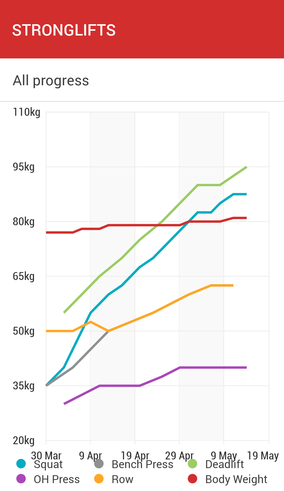

RSS Feed
RSS Feed
Starting Weight Training
18 May 2018I've been weight training for a bit less than two months and I wanted to report on my experiences doing that.
First a word on my background: I didn't use to be very sporty — nor fit — until about five years ago, when I started exercising each day or every other day (depending on the period). I did very light exercising, usually not more than 15 minutes per day, and mostly focusing on pushups and crunches. Last year I also added pullups and chin-ups into the mix.
Despite this regimen not being very stringent — even exercising every day, it's less than 2 hours per week — I achieved a nice level of fitness. I wouldn't have won any strength contest, but I didn't look too bad naked and I wasn't completely weak. Being regular is winning, no matter how little you do.
Onto the weight training then. Like many things I do, it started as something I was curious about and wanted to experiment with. I kinda fancy the idea of getting ripped and strong, and I wanted to see what kind of results I could achieve by training seriously but parsimoniously (in terms of time spent).
I asked for advice on the Slate Star Codex Discord channel, here was my request:
I'm looking for a training program I can use.
My first goal is looking good (think Abercrombie & Fitch model good), with strength as the second priority, and I'd like to strengthen my arms in particular.
Currently I'm quite fit, but not particularly muscular. e.g. my pecs are salient and not flabby, but not particularly large. I'm tall (1m90, 76kg) and probably an ectomorph.
I want a training that can "scale" up to my target and keep me there with as little work as possible on an undefinite basis. Possibly that is going to require two training regiment. That's fine.
My philosophy is that I want training to get out of the way - to be something I do without having to think too hard about it.
I can subscribe to a gym membership, but I'd rather train at home. I own a pullup bar and a set of one-hand weights. I can buy more equipment but my space is limited - so no bench and barbells.
I want a 3-split training (3 days out of the week) as that proves the most flexible for my schedule.
In terms of nutrition, I'm unwilling to tamper with my diet too much (which is varied and healthy). I'm worried about protein intake, as I might be getting the recommended 1g of protein per kilogram, but clearly not the 2/3g recommended for gaining. It seems difficult for me to get that from diet only, so I'll probably need to supplement with proteins (I'm looking for recommendations on this too).
In general, I'm open to supplementing insofar that it helps with my stated objectives. On the other hand, I want to keep things simple, so the benefits should be clear cut.
People ended up recommending the Stronglifts program, and I was immediately drawn to it. First, because it's very simple: you alternate two workouts, each consisting of three exercises: squats, bench press, barbell row; and squats (again), overhead press, deadlifts. All those are full body strength exercises. Second, the proper forms for the exercises is outlined in great detail on the website. I didn't take this into account when I picked the routine, but the companion mobile mobile app is super handy.
The routine is mostly made up of powerlifting / weightlifting moves. Pointedly, it's not bodybuilding: the emphasis is on strength, not on size. This is great: I did not want to end up huge.
By the way, you might be wondering how there might be such a distinction: doesn't voluminous muscles entail strength? Can one be strong without size?
First things first. Bodybuilders are strong, but not in the same way that powerlifters are. They probably can't lift as heavy. On the other hand, powerlifters would probably be hard pressed to perform some of the bodybuilders' routines (a lot of reps at high intensity, often targeting isolated muscles). And of course, powerlifters have size, just much less than bodybuilders.
The second part of the explanation, I will lift straigth from Wikipedia:
In the bodybuilding and fitness community and even in some academic books skeletal muscle hypertrophy is described as being in one of two types: Sarcoplasmic or myofibrillar. According to this hypothesis, during sarcoplasmic hypertrophy, the volume of sarcoplasmic fluid in the muscle cell increases with no accompanying increase in muscular strength, whereas during myofibrillar hypertrophy, actin and myosin contractile proteins increase in number and add to muscular strength as well as a small increase in the size of the muscle. Sarcoplasmic hypertrophy is greater in the muscles of bodybuilders because studies suggest sarcoplasmic hypertrophy shows a greater increase in muscle size while myofibrillar hypertrophy proves to increase overall muscular strength making it more dominant in Olympic weightlifters. These two forms of adaptations rarely occur completely independently of one another; one can experience a large increase in fluid with a slight increase in proteins, a large increase in proteins with a small increase in fluid, or a relatively balanced combination of the two.
So, results?

As you can see in the above graph, I progressed nicely over the last seven weeks. Of course, the program makes you start light — although I actually cheated and upped the weights during my first session until I felt at least a trace amount of effort. It's possible I could have lifted more from the get go, but you want to go progressively to develop proper form. It's also pretty encouraging to see yourself progressing, especially when you break through small plateaus.
I intend to continue on this trajectory, at least until I raise some arbitrary goals. I picked the beginner goals from this page: 1.2x bodyweight (bw) on squat, 0.9bw on bench press, 1.5bw on deadlift and 0.6bw on overhead press. Since I'm currently at 80kg, that's 96kg on squat, 72kg on bench press, 120kg on deadlift and 48kg on overhead press. When I reach these milestones, I intend to re-evaluate the training regimen. I think temporarily switching to some bodybuilding routine might actual be beneficial if I want to progress on the Stronglifts program. I'll have to research it, but it's probably worth a try anyway.
All is not rosy though. The program advertises that it can be completed in ~45 minutes, but if I don't shirk at all, it's taking more like 1.5 hours. Add to that the time from and to the gym and to shower, and I'm now spending 6 hours each week exercising (up from less than two previously). This is bothersome for me, and once I reach a certain level, I will need to research if there is a way to keep the strength while drastically cutting the time spent exercising.
A few other things I want to mention: muscle memory, progressive overload and supplements.
Muscle memory is a big reason why I considered weight training in the first place. Otherwise, if you think about it, you spend time building something you have to maintain forever afterwards. Because of muscle memory even if you reduce or forego your training, you still benefit long term by being able to reach your old condition much faster the next time around.
Muscle memory is not totally well understood, but the prevalent hypothesis is that:
Previously untrained muscles acquire newly formed nuclei by fusion of satellite cells preceding the hypertrophy. Subsequent detraining leads to atrophy but no loss of myo-nuclei. The elevated number of nuclei in muscle fibers that had experienced a hypertrophic episode would provide a mechanism for muscle memory, explaining the long-lasting effects of training and the ease with which previously trained individuals are more easily retrained.
On subsequent detraining, the fibers maintain an elevated number of nuclei that might provide resistance to atrophy; on retraining, a gain in size can be obtained by a moderate increase in the protein synthesis rate of each of these many nuclei, skipping the step of adding newly formed nuclei. This shortcut may contribute to the relative ease of retraining compared with the first training of individuals with no previous training history.
Remember myofibrillar muscle growth from earlier? Well:
The additional contractile proteins appear to be incorporated into existing myofibrils (the chains of sarcomeres within a muscle cell). There appears to be some limit to how large a myofibril can become: at some point, they split. These events appear to occur within each muscle fiber. That is, hypertrophy results primarily from the growth of each muscle cell, rather than an increase in the number of cells. Skeletal muscle cells are however unique in the body in that they can contain multiple nuclei, and the number of nuclei can increase.
So apparently myofibrillar growth leads to more nuclei and so to more muscle memory. (Again, the science doesn't seem too well established, somewhat suprisingly.)
Progressive overload is the principle on which the Stronglifts is based. Basically you keep the same number of repetition but you add more weight each time you succeed with your current weight. Your body adapts and learns to lift stronger and stronger weights. Theoretically, you could also do this by increasing the number of repetitions instead.
A regret I have is not being more serious about my home training before switching to weight training. I feel like if I had tracked how many pullups / chin-ups / pushups I was able to do and tried to consistently do more (progressive overload), I could have improved my condition quite a bit without the hassle of going to the gym.
Finally, supplements. I take two supplements: proteins and creatine. These are the only two that I found offer really clear-cut benefits.
You don't need to supplement proteins, but you have to eat enough of them. Research indicates you need about 1g per kilo of bodyweight for maintenance, and some researcher say 1.8g per kilo of bodyweight is enough for optimal muscle growth. Other sources suggest as much as 2 to 3g per kilo for optimal muscle growth. Interestingly, it's never a problem to take too much proteins: they simply get evacuated if they weren't absorbed after a certain time.
Anyway, I weight 80kg. This means I need at least ~160g of proteins if I want to get as much muscle growth as I can. Meat contains about 25% of protein by weight. For other types of food it varies, some vegetables have as much as 10/15% but those aren't the most common. Cheese has about 25%, eggs have 15%, yogurt has 10%, etc. The most proteins I tend to get is about 60g of proteins from a burrito at noon, and 50g of proteins from 200g of meat in the evening, with a deficit of about 50g of proteins. On many days, I'm not even there. So I supplement. I take 30g of proteins per day as a shake. If you did the math, you notice I should probably take more. Truth be told I hadn't realized... That's why you do the math. Also the thing tastes incredibly foul, that's some anti-motivation right there.
A short digression on caloric intake. I found that lifting didn't really allow me to increase my caloric intake all that much. And of course, disappointingly, you can be as muscular as you want, if you're fat, the muscles won't show. At the same time, running a high caloric deficit is detrimental to muscle growth: the body break down muscle as well as fat for energy. To lose fat while gaining muscle one has to run a slight caloric deficit. Easier said than done. Intermittent fasting, which I was already practicing, can apparently help.
The other supplement I take is creatine which has well-researched (but slight!) effects on muscle growth and a slew of other good things (reduced fatigue, increased power output).
By the way I found the website examine.com to be invaluable when researching supplements. It cross-references scientific studies on substances and present the results in an easy-to-parse way. Much recommended.
I investigated a few other supplements besides those (BCAAs, Beta-Alanine) but none of them seemed to offer clear enough benefits to justify the tedium.
Before I wrap this up, a few more points of feedback. I never hurt myself while training, and I don't even feel sore after training. This was a pleasant surprise. I did experience some knee pain from heavy squatting, which indicated that I was leaning too much forward when doing my squats, making my knees pick up work that should have been done by my hips. I corrected my form and I'm now doing much better. I also had really bad forms on my first few series of dumbell row and deadlifts, which I could immediately tell from back strain.
Finally, besides what I already recommended (Stronglifts, examine.com), the only other resource I would recommend is Jeremy Ethier's Youtube channel. Not that I found anything truly crucial there, but it's interesting, well explained and well researched.
Anyway, that was it for the experience report. Have fun training, or whatever floats your boat :)